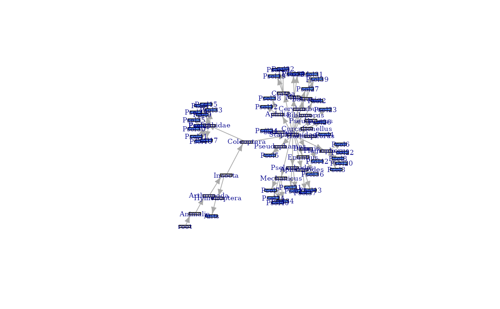
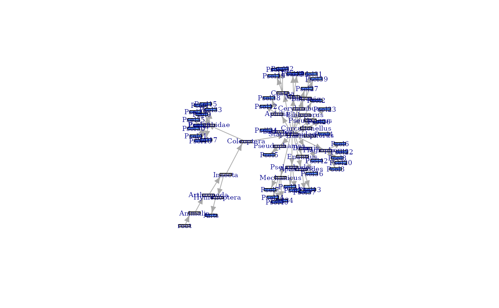

This function loads the taxon index for a dataset (see
get_taxa) and creates a taxonomic graph for the dataset.
The graph vertex attributes contain further details of each taxon,
including GBIF id and taxonomic status.
get_taxon_graph(record)Arguments
- record
A single dataset record id
Value
An graph object.
Details
This function may modify the taxon index data to represent it as a graph, primarily to avoid duplicating taxon names, which are used as the primary vertex id. Possible issues are:
A user maps two worksheet names onto the _same_ taxon name: for example, "moth" and "butterfly" both using Lepidoptera as a taxon name. This is resolved by recreating the two worksheet names as children ofthe shared taxon name.
The taxon index may contain two GBIF taxonomic concepts with the same name (e.g. an accepted and doubtful usage). In this case, the function appends the GBIF ID to make taxon names unique.
Simple duplication of identical taxa - this should not happen but has been observed and the function removes all but one entry.
Missing parent taxa - again this should not happen but sometimes the GBIF backbone chain stops above the Kingdom level. The function adds a unique name for unknown parents.
Examples
set_example_safe_dir()
#> Loading and caching index
#> Validating directory
beetle_graph <- get_taxon_graph(1400562)
plot(beetle_graph, vertex.label.cex = 0.6, vertex.size = 15,
vertex.size2 = 3, vertex.shape = "rectangle")
 # show worksheet names for tips
wsn <- igraph::vertex_attr(beetle_graph, "worksheet_name")
txn <- igraph::vertex_attr(beetle_graph, "name")
labels <- ifelse(is.na(wsn), txn, wsn)
is_leaf <- igraph::vertex_attr(beetle_graph, "leaf")
vert_col <- ifelse(is_leaf, "cornflowerblue", "grey")
plot(beetle_graph, vertex.label.cex = 0.6, vertex.size = 15,
vertex.size2 = 3, vertex.shape = "rectangle",
vertex.label = labels, vertex.color= vert_col)

unset_example_safe_dir()
#> Loading and caching index
#> Validating directory
# show worksheet names for tips
wsn <- igraph::vertex_attr(beetle_graph, "worksheet_name")
txn <- igraph::vertex_attr(beetle_graph, "name")
labels <- ifelse(is.na(wsn), txn, wsn)
is_leaf <- igraph::vertex_attr(beetle_graph, "leaf")
vert_col <- ifelse(is_leaf, "cornflowerblue", "grey")
plot(beetle_graph, vertex.label.cex = 0.6, vertex.size = 15,
vertex.size2 = 3, vertex.shape = "rectangle",
vertex.label = labels, vertex.color= vert_col)

unset_example_safe_dir()
#> Loading and caching index
#> Validating directory